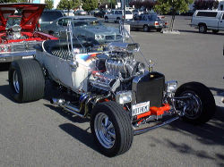

Hot Rods

Los Hot Rods son autos hechos a mano, normalmente a partir de algún auto viejo (normalmente un Ford). La idea original era mejorar el desempeño del auto, reduciendo su peso (quitando el techo, los parabrisas, etc), bajándole la altura, cambiando el motor o afinándolo, colocándole ruedas más anchas, y por supuesto pintándolo con mucho colorido.
Hay toda una sub cultura alrededor de este “arte”, y está llegando a nuestro país, principalmente por la popularidad de varios programas de cable.
Este es un tïpico producto de la cultura norteamericana, es probable que los norteamericanos no sepan en qué invertir su tiempo. Sin embargo, hay que recordar que el auto es un elemento central de la cultura yanqui, así que es natural que esto iba surgir en ese país.
Para los practicantes del Hot Rod, el producto de su trabajo son obras de arte. Podemos decir, sin ningún problema, que existe una cultura del Hot Rod. Por muy bizarro que nos parezca, nos agrade o no, el Hot Rod es un fenómeno cultural.
En esta cultura, los creadores y los dueños son, por lo general, la misma persona. Un fanático, con suficiente tiempo, dinero, conocimientos mecánicos, con la ayuda de otros, adquiere un automóvil, hace un diseño y construye un nuevo tipo de auto, un diseño que no se le ocurrió a los fabricantes originales.
Si son obras de arte, entonces los dueños de esos autos, son también autores, o creadores. En un sentido más estricto son innovadores, pero muchas veces el producto es tan distinto al original, que podemos hablar de creación.
La propiedad de un auto Hot Rod es clara, es de aquel que compra el auto, si es que su autor lo pone a la venta.
Cualquier artefacto creado por el hombre es producto de una idea. El artefacto puede ser tangible, como la carrocería de un Hot Rod, pero también intangible, como el diseño, o la visión que tenía el creador del hot rod.
Cuando el creador de un Hot Rod plasmó en un chasis y una carrocería su visión, lo que hizo es plasmar su creación intangible en algo “tangible”.
Es por esto que digo que no hay diferencia entre la propiedad de lo tangible y lo intangible, porque al final todo artefacto es producto de ideas, que surgen de la mente.
Pero es más, si el autor de un hot rod imagina la más hermosa de las carrocerías y no la plasma en nada, entonces en la práctica no existe, y por lo tanto no es posible que él reclame derechos sobre esa visión.
Esa idea es como el Gato de Schrodinger, existe y no existe a la vez, sólo cuando esa idea se hace tangible podemos asegurar su existencia.
Al final, toda idea debe tangibilizarse de alguna manera. En un escrito, en una grabación, en el diseño de un automóvil, o en el código de un programa.
Yo no creo en lo “intagible”, porque en realidad todo es tangible, aunque sea temporalmente. Algunas cosas serán aglomeraciones de átomos, pero hay otras cuya tangibilidad es más sutil, pueden ocurrir durante el breve intervalo de una sinapsis, pero no por eso dejan de ser tangibles.
Si la tangibilidad es algo tan sutil, es obvio que nos perdamos en las discusiones.
El problema, es que cuando hablamos de propiedad a muchas personas no les gusta el término. Es válido, porque tal como dice Carlos, pareciera que la cultura está en peligro por culpa de la propiedad intelectual.
En realidad, la cultura nunca ha estado, ni estará en peligro. La que está en peligro es la propiedad intelectual, no la cultura. Mientras haya gente, habrá cultura, podemos hablar de la calidad de esa cultura, pero esa es otra discusión.
Cuando alguien piratea pone en peligro los derechos de un creador, pero no pone en peligro la cultura, como nos anuncian escandalosamente algunos. Que para mí estos derechos son de propiedad, y para Carlos sean derechos de autor, ya casi es una cuestión semántica.
Saquemos de la discusión sobre la propiedad intelectual el tema del derecho o acceso a la cultura, son discusiones distintas, si las juntamos nos confundimos.